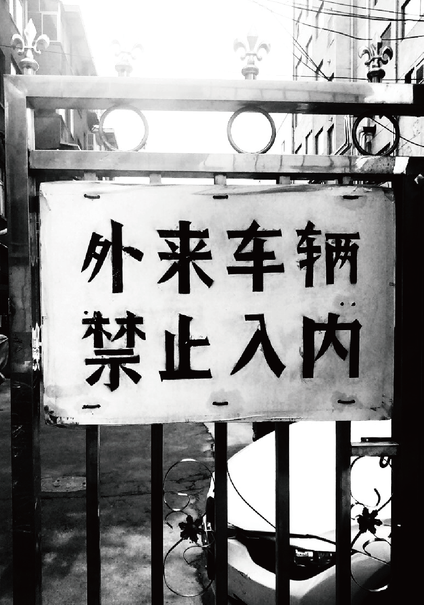
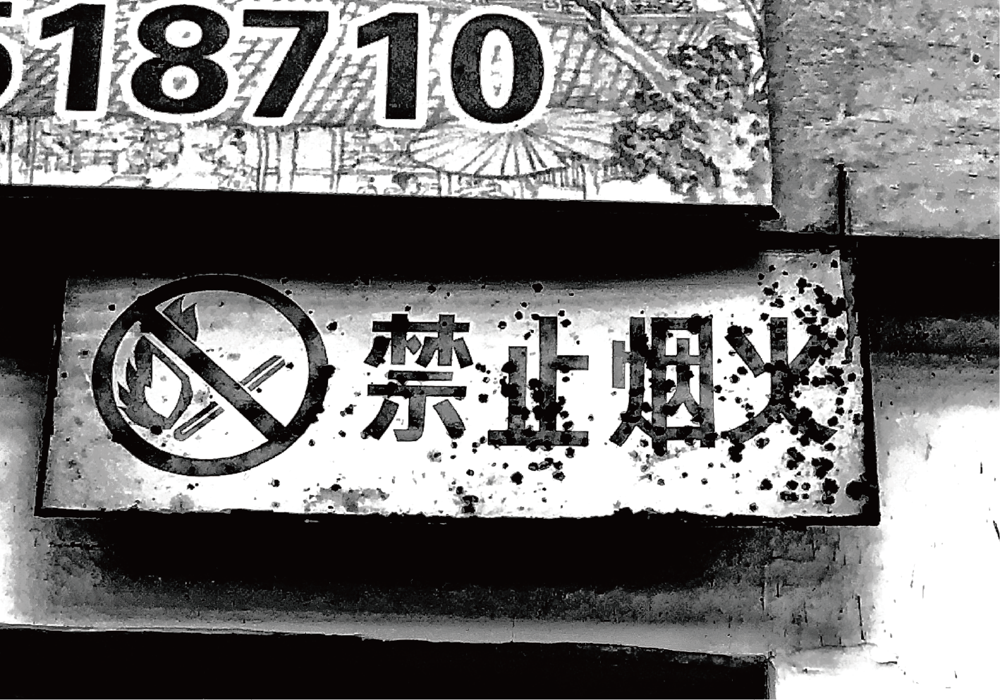
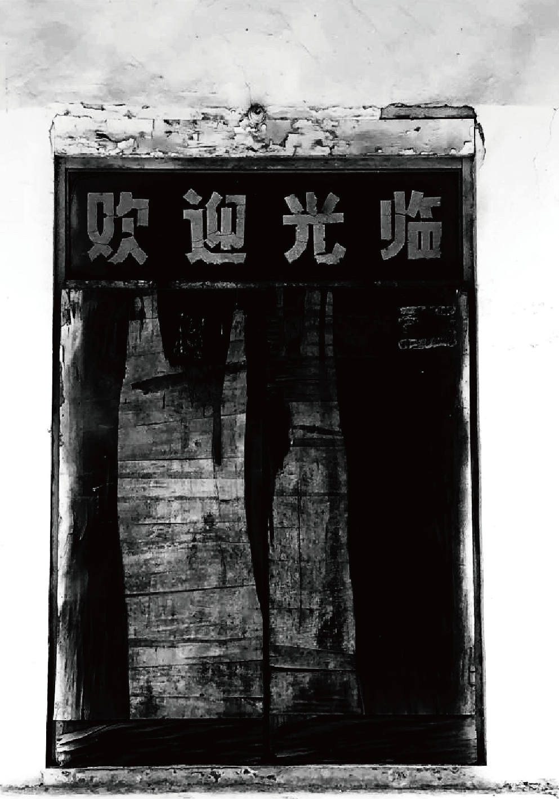
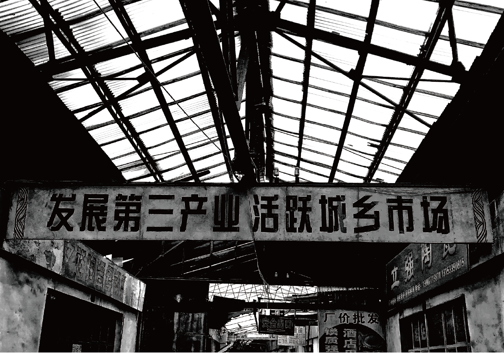
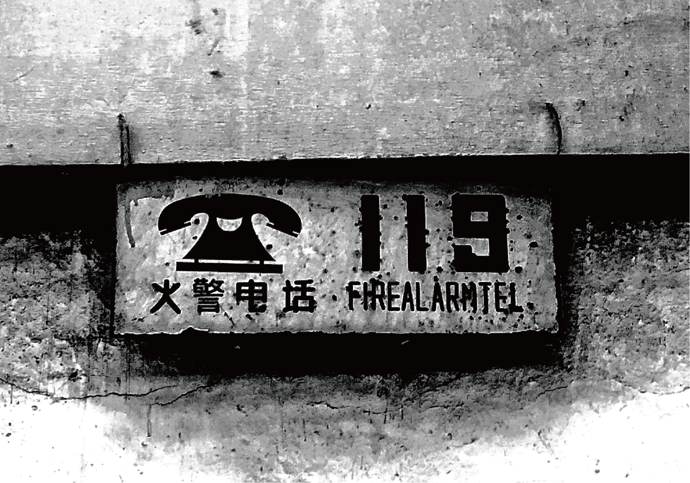

01 / Opening Scene
城市议题封面
用主视觉、标题和导语建立整页情绪与阅读入口。
把城市文化议题组织成一条可阅读、可浏览、可延展传播的视觉叙事链路。
这一页承接主站的“项目”入口，用更完整的专题结构去展示研究切口、图文逻辑、页面节奏与媒介延展方式。
用主视觉、标题和导语建立整页情绪与阅读入口。


用封面标题、导语和主图先建立议题重量，再把用户引入后续阅读路径。
把地图、街头文字、访谈摘录和视觉采样做成可浏览的证据层。
同一套专题语言继续延展到长图、社媒封面、短视频封面与活动页面。
参考专题编辑中的“章节预览”方式，把不同证据与场景压缩为一条可扫描的内容带。

从街头招牌切入地方叙事。

记录城市表面的时间痕迹。

让叙事从个体经验进入。

把长页拆成更清晰的阅读段落。
同一套视觉叙事可以向网页长页、短内容封面、讲述型海报与研究展示持续延展。